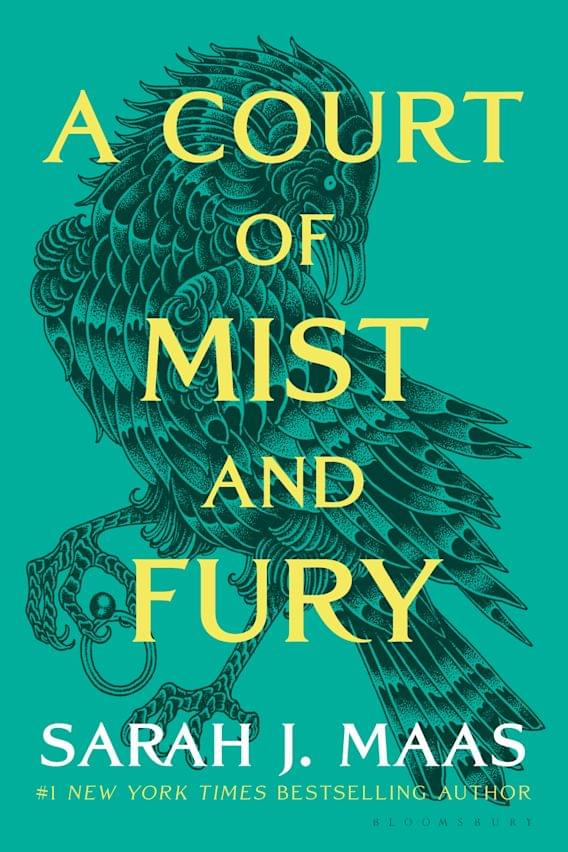

Feyre is a huntress. She thinks nothing of slaughtering a wolf to capture its prey. But, like all mortals, she fears what lingers beyond the forest. And she will learn that taking the life of a magical creature comes at a high price . . .
A COURT OF THORNS AND ROSES
A COURT OF MIST AND FURY

A COURT OF WINGS AND RUIN

A COURT OF FROST AND STARLIGHT

A COURT OF SILVER FLAMES